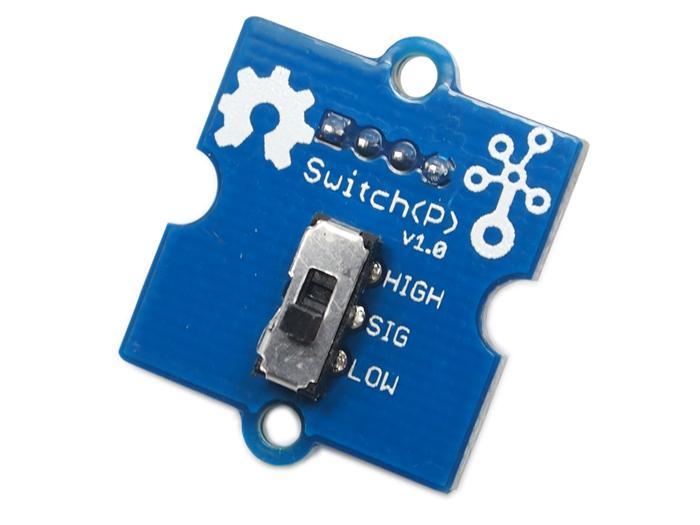
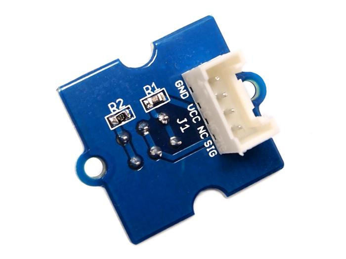

This Grove – Switch is a mini SPDT slide, great for “ON/OFF” situations. It’s such a reliable switch of great build quality that we adopt it on many of our boards. You should stock some for your Grove prototyping system.
What does “P” mean? “P” is for “panel mount” in this product.
Model:COM08213P

Below is a simple example showing how to use a switch to turn on/off an LED.The working principle and use just the same as the Grove-Button.
1. Connect the Grove-LED to the Digital 13 of Grove - Basic Shield and connect the Grove -Switch(P) to the Digital 2 of Grove-Base Shield with two Grove cables.
2. Plug the Grove - Base Shield into Arduino and connect Arduino to PC by using a USB cable.
.
3. Copy and paste code below to a new Arduino sketch. Please click here if you do not know how to upload.
// constants won't change. They're used here to
// set pin numbers:
const int switchPin = 2; // the number of the pushbutton pin
const int ledPin = 13; // the number of the LED pin
// variables will change:
int switchState = 0; // variable for reading the pushbutton status
void setup() {
// initialize the LED pin as an output:
//pinMode(ledPin, OUTPUT);
// initialize the switch pin as an input:
Serial.begin(9600);
pinMode(switchPin, INPUT);
}
void loop(){
// read the state of the switch value:
switchState = digitalRead(switchPin);
if (switchState == HIGH) {
// turn LED on:
// digitalWrite(ledPin, HIGH);
Serial.println("switch high!");
}
else {
// turn LED off:
// digitalWrite(ledPin, LOW);
Serial.println("switch low");
}
}
After uploading the code, You can see the led will light up when the switch is at high side.
If you have questions or other better design ideas, you can go to our forum or wish to discuss.
Copyright (c) 2008-2016 Seeed Development Limited (www.seeedstudio.com / www.seeed.cc)